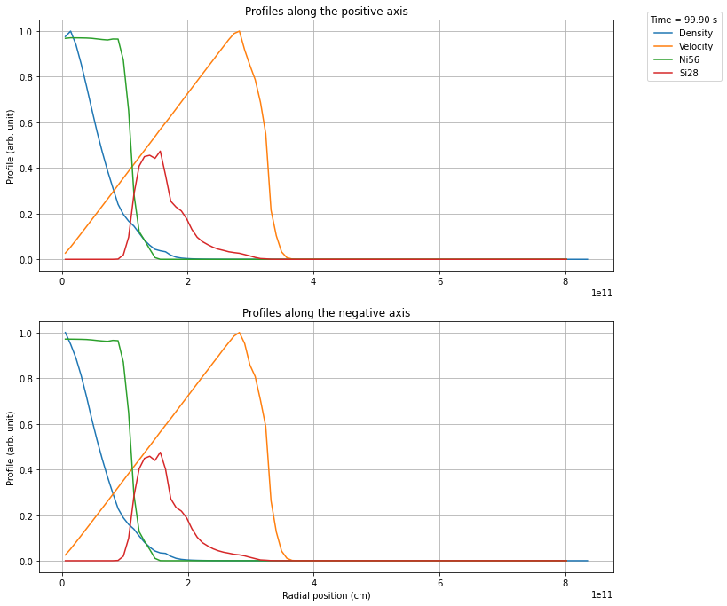
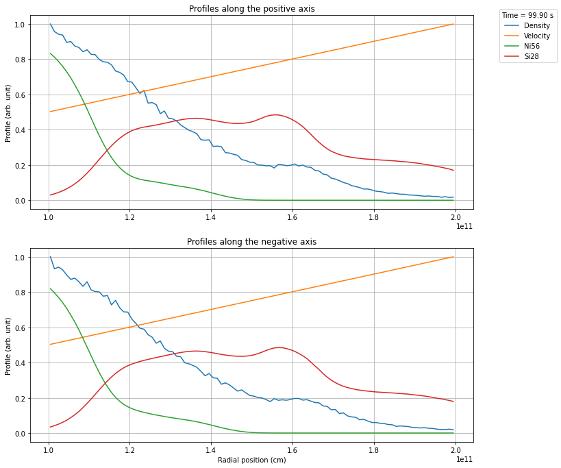

You can interact with this notebook online: Launch notebook
Converting Arepo snapshots to be usable by TARDIS¶
Note
This notebook cannot be run interactively!
What is Arepo?¶
Arepo is a massively parallel gravity and magnetohydrodynamics code for astrophysics, designed for problems of large dynamic range. It employs a finite-volume approach to discretize the equations of hydrodynamics on a moving Voronoi mesh, and a tree-particle-mesh method for gravitational interactions. Arepo is originally optimized for cosmological simulations of structure formation, but has also been used in many other applications in astrophysics.
[WSP20]
This parser is intended for loading Arepo output files (‘snapshots’), extracting the relevant (line-of-sight dependent) data and exporting it to csvy files, which can in turn be used in TARDIS models (see CSVY model).
Note
This parser has been developed for the (not publicly available) development version of Arepo, not the public version. Although it should also work with snapshots from the public version, this has not been tested. If you run into trouble loading the snapshot using the built-in functions, try providing the data manually.
[ ]:
import numpy as np
import matplotlib.pyplot as plt
from tardis.io.model.arepo import read_arepo_snapshot, ArepoData
from tardis.io.model.arepo.utils import (
create_cone_profile,
create_full_profile,
rebin_profile,
export_profile_to_csvy,
plot_profile,
)
import json
from astropy import units as u
%matplotlib inline
Loading the simulation data¶
As a first step, the relevant data has to be loaded from an Arepo snapshot, i.e. an output file of Arepo. In case you have the arepo-snap-util package installed, you can use the built in wrapper (as described below) to load the relevant data. In case you do not have this package installed or want to load the snapshot in a different way, you can manually provide the relevant data and continue with the next step.
If you’re using the built-in tool, you will need to provide the path to the snapshot file, a list with the elements you want to include in your TARDIS model, as well as the species file with which the Arepo simulation was run. (The species file should contain one header line, followed by two columns, where the first contains the names of all the species and is used to find the indices of the individual species within the snapshot. The second column is not used by the loader.)
In case you have the arepo-snap-util package installed, you can load the data directly from a snapshot:
[ ]:
arepo_data = read_arepo_snapshot(
"arepo_snapshot.hdf5", ["ni56", "si28"], "data/species55.txt"
)
This will load the necessary data from the snapshot and return an ArepoData object containing:
time: Time of the snapshot (asastropy.units.Quantity)position: Position array in Cartesian coordinates (3, N) in cmvelocities: Velocity array in Cartesian coordinates (3, N) in cm/sdensities: Density array in g/cm³mass: Mass array in gisotope_dict: Dictionary of nuclear mass fractions keyed by species name
See the API documentation for more options on how to load snapshots.
Note
The built in functionality only loads Arepo particle species 0, i.e. gas particles. For most (if not all) purposes connected to TARDIS, gas particles should be the only species of interest. In case you need to load a different particle species, please manually load the data.
This will fail with an error if you do not have the arepo-snap-util package installed. Since this is not a default dependency of TARDIS, the data can also be loaded manually. (This manual load can effectively be used to load all kinds of models unrelated to Arepo, as long as the data comes in the correct format.)
The data could be loaded from a previously generated json file, where all necessary input from the snapshot has been dumped in. (The ``json`` file is only an example and more for illustrative purposes. As long as the data is provided in the correct format (see below) it is up to the user how it is saved/loaded.)
Code: (click to expand)
### Dumping the data:
data = {
"pos" : arepo_data.position.tolist(),
"vel" : arepo_data.velocities.tolist(),
"rho" : arepo_data.densities.tolist(),
"mass" : arepo_data.mass.tolist(),
"xnuc": [arepo_data.isotope_dict[x].tolist() for x in list(arepo_data.isotope_dict.keys())],
"time": arepo_data.time.value,
}
json_string = json.dumps(data)
with open('arepo_snapshot.json', 'w') as outfile:
json.dump(json_string, outfile)
### Loading the data:
with open('arepo_snapshot.json') as json_file:
snapshot_data = json.loads(json.load(json_file))
# Parse the .json file
position, velocities, densities, mass, isotope_fractions, time = (
snapshot_data["pos"],
snapshot_data["vel"],
snapshot_data["rho"],
snapshot_data["mass"],
snapshot_data["xnuc"],
snapshot_data["time"],
)
position = np.array(position)
velocities = np.array(velocities)
densities = np.array(densities)
mass = np.array(mass)
# The nuclear data should be in a dict where each element has its own entry (with the key being the element name)
isotope_dict = {
"ni56" : np.array(isotope_fractions[0]),
"si28" : np.array(isotope_fractions[1]),
}
# Create ArepoData object
arepo_data = ArepoData(
time=u.Quantity(time, "s"),
position=position,
velocities=velocities,
densities=densities,
mass=mass,
isotope_dict=isotope_dict,
)
[ ]:
print("Position data shape: ", arepo_data.position.shape)
print("Velocity data shape: ", arepo_data.velocities.shape)
print("Density data shape: ", arepo_data.densities.shape)
print("Mass data shape: ", arepo_data.mass.shape)
print("Nuclear data shape (per element): ", arepo_data.isotope_dict["ni56"].shape)
Position data shape: (3, 1218054)
Velocity data shape: (3, 1218054)
Density data shape: (1218054,)
Mass data shape: (1218054,)
Nuclear data shape (per element): (1218054,)
In case you want to load the snapshot data itself with your own tools, you will need to create an ArepoData object with the following fields:
time: Time of the snapshot (asastropy.units.Quantity)position: Position in the center of mass frame ->np.arraywith shape (3, N)velocities: Velocity ->np.arraywith shape (3, N)densities: Density ->np.arraymass: Mass ->np.arrayisotope_dict: Nuclear fraction of each element you want to include ->dictcontainingnp.array
The data should have the same shape as the one provided by the built-in tool (see the given shapes above for an example).
Extracting a profile and converting it to a csvy file¶
Now you can create a TARDIS model. There are two possibilities on how to extract the profiles from the snapshot:
Cone profile: This extracts the data within a specified cone using
create_cone_profile()Full profile: This averages over the whole simulation using
create_full_profile()
Both functions return profile data for positive and negative directions along the x-axis.
[ ]:
(
pos_prof_p,
pos_prof_n,
vel_prof_p,
vel_prof_n,
rho_prof_p,
rho_prof_n,
mass_prof_p,
mass_prof_n,
xnuc_prof_p,
xnuc_prof_n,
) = create_cone_profile(arepo_data, opening_angle=40)
This extracts the data from the cone (in this example). The function returns 10 values:
Position, velocity, density, mass, and nuclear fraction profiles for both positive (
_p) and negative (_n) directions
For a full profile, use:
create_full_profile(arepo_data, inner_radius=..., outer_radius=...)
Next you can visualize the profiles using the plot_profile() function. The plot will always show both the positive and negative axis.
Note
The keyword opening_angle=40 is only needed for the cone profile. The other modes do not accept this keyword! The angle itself is the opening angle of the full cone and NOT the angle between the central x-axis and the cone!
[ ]:
# Rebin the profile to 100 shells
(
pos_prof_p,
pos_prof_n,
vel_prof_p,
vel_prof_n,
rho_prof_p,
rho_prof_n,
mass_prof_p,
mass_prof_n,
xnuc_prof_p,
xnuc_prof_n,
) = rebin_profile(
pos_prof_p,
pos_prof_n,
vel_prof_p,
vel_prof_n,
rho_prof_p,
rho_prof_n,
mass_prof_p,
mass_prof_n,
xnuc_prof_p,
xnuc_prof_n,
nshells=100,
)
# Plot the profile
fig = plot_profile(
pos_prof_p,
pos_prof_n,
vel_prof_p,
vel_prof_n,
rho_prof_p,
rho_prof_n,
xnuc_prof_p,
xnuc_prof_n,
arepo_data.time.value,
)
plt.show()

Plotting the data¶
Using plot_profile() you can create a plot of the exported profile. You can save it by passing save=<filename> and dpi=<dpi> arguments. Due to the large number of cells usually used in Arepo simulations, it is recommended to plot the data only after rebinning the profiles or exporting them to a csvy file (which automatically rebins the data).
Manually rebinning the data¶
Using rebin_profile(), you can manually rebin the data to a specified number of shells, using the mean value of the data in each bin (mass-weighted for velocities and abundances). The function returns the same 10 values as the profile creation functions.
Selecting a specific region¶
In many cases you only want a very specific region from the snapshot, e.g. cutting out the dense, optically thick regions. This can be achieved using the keywords inner_radius and outer_radius.
[ ]:
# Create profile with radius cuts
(
pos_prof_p,
pos_prof_n,
vel_prof_p,
vel_prof_n,
rho_prof_p,
rho_prof_n,
mass_prof_p,
mass_prof_n,
xnuc_prof_p,
xnuc_prof_n,
) = create_cone_profile(
arepo_data, opening_angle=40, inner_radius=1e11, outer_radius=2e11
)
# Rebin to 100 shells
(
pos_prof_p,
pos_prof_n,
vel_prof_p,
vel_prof_n,
rho_prof_p,
rho_prof_n,
mass_prof_p,
mass_prof_n,
xnuc_prof_p,
xnuc_prof_n,
) = rebin_profile(
pos_prof_p,
pos_prof_n,
vel_prof_p,
vel_prof_n,
rho_prof_p,
rho_prof_n,
mass_prof_p,
mass_prof_n,
xnuc_prof_p,
xnuc_prof_n,
nshells=100,
)
# Plot
fig = plot_profile(
pos_prof_p,
pos_prof_n,
vel_prof_p,
vel_prof_n,
rho_prof_p,
rho_prof_n,
xnuc_prof_p,
xnuc_prof_n,
arepo_data.time.value,
)
plt.show()

Once you have created a profile of the desired region, you can export the profile to a csvy file using export_profile_to_csvy(), which in turn can be used in a TARDIS model. Here you have to specify how many shells you want to export. The profiles are rebinned automatically using Scipy’s binned_statistic function, using the mean value of the data in each bin (mass-weighted for velocities and
abundances).
Note: You need to pass the profile data for one direction only (typically the positive direction _p).
[ ]:
filename = export_profile_to_csvy(
pos_prof_p,
vel_prof_p,
rho_prof_p,
mass_prof_p,
xnuc_prof_p,
arepo_data.time.value,
"snapshot_converted_to_tardis.csvy",
nshells=20,
overwrite=True,
)
'snapshot_converted_to_tardis.csvy'
During the export, the yaml header is automatically written and includes the time of the snapshot as the time for both the nuclear data as well as the density profile. By default, you export one direction (typically positive). To export the negative axis, pass the _n profiles instead of _p.
All abundances will be normalized such that they roughly sum to 1, but slight deviations are expected to occur.
Note
The export function will not overwrite existing files, but rather add an incrementing number to the filename.
Using the legacy command line tool¶
Note
The command line tool uses the legacy class-based API which is still available in tardis.io.model.arepo.arepo but is deprecated. For new code, please use the functional API shown above.
You can use the legacy tardis.io.model.arepo.arepo module as a command line utility for batch processing:
python ./<location_of_arepo_module>/arepo.py snapshot.hdf5 snapshot_converted.csvy -o 40 -n 20 --inner_radius 1e11 --outer_radius 2e11 -e ni56 si28 --plot plot.png
This will also save diagnostic plots of both the raw and rebinned profiles. For more information on how to use the command line tool run:
python ./<location_of_arepo_module>/arepo.py --help
Note
The command line tool does only work with snapshot files, not with e.g. json files. It is in any case not advised to use json files as an intermediate step, as the become huge for higher resolutions.